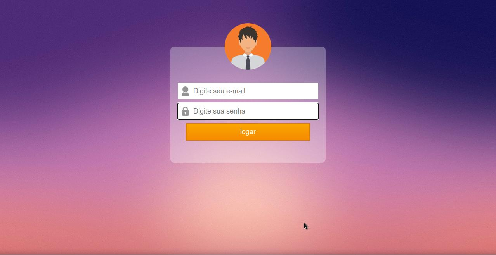
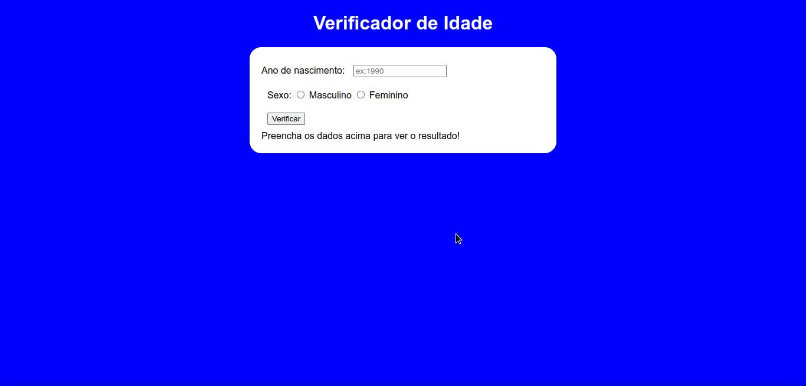
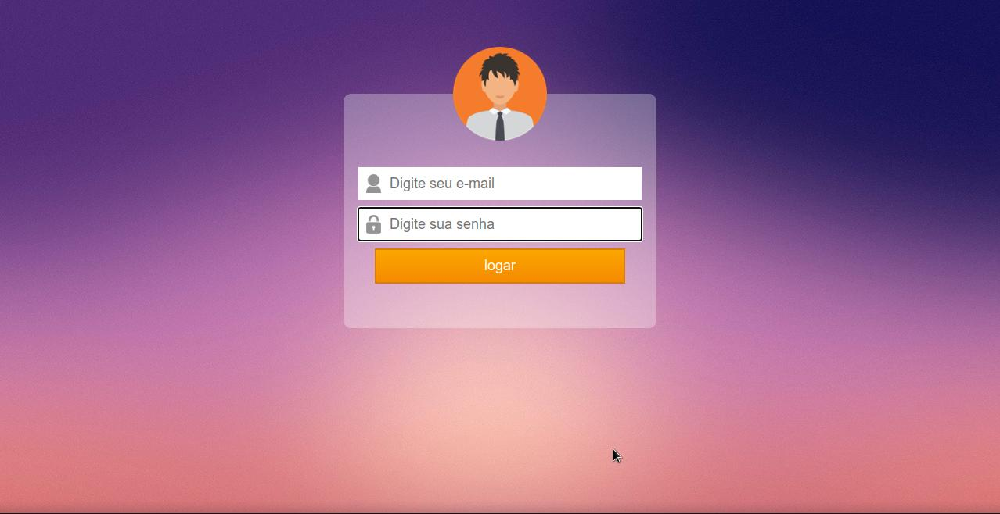
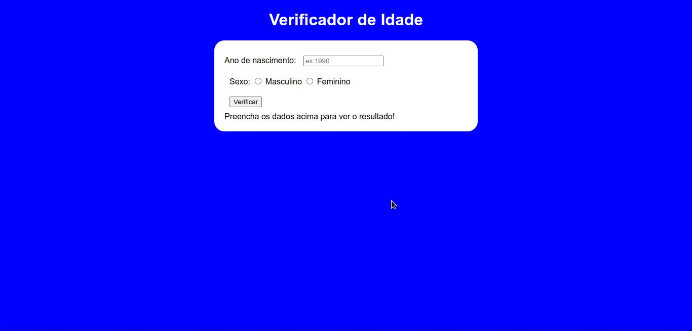

Desenvolvedor Web Frontend
Roger Albuquerque

Sou Desenvolvedor Frontend,crio projetos com Javascript, ReactJs, Sass, Styled Components e outras ferramentas.
Atualmente me encontro no terceiro período do curso de Analise e Desenvolvimento de Sistemas, porém iniciei os estudos em programação no ano de 2015 aprendendo sobre logica e depois desenvolvimento de software com linguagem C. Após isso, no final de 2015 entrei em um hiato até 2021, que foi quando voltei a estudar programação com foco em desenvolvimento web em cursos da Rocketseat, Udemy, Youtube, e lendo as documentações das ferramentas.
Eu me chamo "Eu", mas as pessoas me chamam de Roger.
Me considero alguém resiliente, estóico e metódico.Metódico pois costumo sempre criar metas e objetivos e penso sempre no que fazer para alcança-los da melhor forma possível, me organizando com métodos, horários e rotinas para isso.Estóico e resiliente pois nunca deixo com que dificuldades ou imprevistos atrapalhem meu humor ou meu desempenho no que estou fazendo.
 


